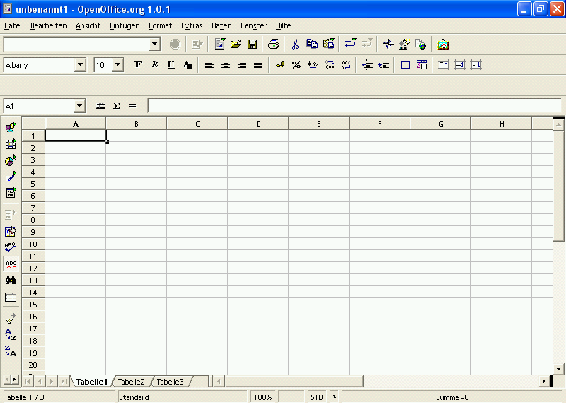

Diese Anleitung bezieht sich auf die Programmversion 1 von OpenOffice.org.
Die vollständige Liste aktueller Dokumentationen finden Sie im Dokumentationsportal.
Diese Anleitung als PDF-Datei herunterladen.
Erste Schritte in Calc
Wie einfache Kalkulationen, Zell- und Tabellenformatierungen erstellt werden.
zur Verfügung gestellt
durch
das OpenOffice.org Dokumentations-Projekt
Inhaltsverzeichnis
Eine kurze Einführung in die Arbeitsumgebung

Abbildung
1: Das Anwendungsfenster von Calc
Bevor Sie beginnen, Ihre umfangreichen
Kalkulationen zu erstellen, die Sie in Windeseile fertiggestellt
haben werden, möchten wir Sie kurz mit den Werkzeugen Ihrer
Arbeitsumgebung vertraut machen.
Direkt unter dem Fensterrahmen (in dem "unbenannt1 - OpenOffice.org 1.0.1" steht) sehen Sie die Menü- und drei Symbolleisten:
- Die Menüleiste
- Die Funktionsleiste
- Die Objektleiste
- Die Kalkulationsleiste
Die Menüleiste enthält die Hauptbefehle der Tabellenkalkulation. Die Funktionsleiste ermöglicht den Zugriff auf allgemeine Programmfunktionen wie Öffnen, Speichern, Kopieren, Ausschneiden, Einfügen usw. Die Objektleiste fasst einen Satz Werkzeuge zusammen, die speziell für Kalkulationen oder zum Formatieren der Zellen gedacht sind (Zahlenformat, Textausrichtung, Rahmen). Schließlich gibt es noch die Kalkulationsleiste, deren Sinn es ist, die Eingabe von Formeln, Zahlen und Texten in die Kalkulation zu ermöglichen und Ihnen die momentan markierte Zelle anzuzeigen.
|
|
Sie können die Symbolleisten Ihren persönlichen Bedürfnissen anpassen. Klicken Sie dazu mit der rechten Maustaste auf die jeweilige Leiste. Daraufhin erscheint ein Kontextmenü, in dem Sie auf „Anpassen...“ oder „Bearbeiten...“ klicken, um den Inhalt der Leiste zu verändern. Sie können auch „Sichtbare Schaltflächen“ wählen und Schalter Ihrer Wahl hinzufügen oder entfernen. |
Am linken Bildschirmrand sehen Sie die Werkzeugleiste (hier rechts zu sehen). Diese Leiste stellt Ihnen erweiterte Werkzeuge zur Verfügung. So können Sie damit zum Beispiel Diagramme einfügen oder die automatische Rechtschreibprüfung ein- bzw. ausschalten.
Am unteren Bildschirmrand sehen Sie die Statuszeile. Sie fasst interessante Informationen über Ihre aktuelle Tabelle zusammen, zum Beispiel den Zoom-Faktor und die Summe der markierten Zellen.
|
|
Ein Klick mit der rechten Maustaste in den Bereich „Summe“ gibt Ihnen Zugriff auf ein Kontextmenü, das eine Auswahl anderer Werte ermöglicht (Mittelwert, Minimum, Maximum, usw.). |
Sie werden bemerken, dass das Dokument, das Sie gerade geöffnet haben, standardmäßig drei Tabellen enthält. Diese sind an drei schmalen Reitern über der Statuszeile zu erkennen und mit Namen versehen: „Tabelle1“, „Tabelle2“, „Tabelle3“.
Eine Tabelle wird durch gitterartig angeordnete Zellen dargestellt, die durch Koordinaten definiert werden. Die Koordinaten jeder Zelle ergeben sich aus der Spalte (horizontale Position), beschrieben durch Buchstaben (A...IV), und der Zeile (vertikale Position), beschrieben durch Zahlen (1...32000). Diese Koordinaten werden in grauen Spalten bzw. Überschriften in der Tabelle dargestellt. Daraus folgt, dass die erste Zelle (ganz oben, ganz links) die Bezeichnung A1 trägt. Wenn Sie sich in der Tabelle nach rechts bewegen, werden Sie merken, dass die Spalten ab der Spalte 27 durch zwei Buchstaben identifiziert werden: nach Z geht es mit AA, AB, AC, usw. weiter. Nach AZ geht es dann wieder mit BA, BB, BC, usw. weiter. Mit einem Klick auf die Spalten- oder Zeilenbezeichnung (also das graue Kästchen) können Sie die ganze Spalte bzw. Zeile markieren.
Die erste Kalkulation
Falls Sie direkt hier angefangen haben zu lesen und den vorherigen Abschnitt übersprungen haben, sollten Sie sich nochmal überlegen nicht doch oben zu beginnen, denn einige Begiffe, die ab jetzt benutzt werden, wurden dort erläutert. Wie auch immer, wenn Sie dies nicht möchten oder es Sie langweilt, lesen Sie weiter und Sie werden lernen, wie man mit Calc Additionen durchführt!
Wie oben erwähnt, werden die Kästchen im Gitternetz Zellen genannt. Sie können in diese Zellen Zahlen, Text oder Formeln eingeben. Klar, denn die Existenzberechtigung einer Tabellenkalkulation ist der sinnvolle Umgang mit den Inhalten solcher Zellen.
Nun gut, genug geredet, lassen Sie uns die erste Kalkulation erstellen:
- In die Zelle A1 schreiben Sie =2+3.
- Drücken Sie anschließend <Enter> auf der Tastatur.
- Die Zahl 5 erscheint in der Zelle, denn das Ergebnis einer Berechnung wird automatisch dargestellt.
Sie fragen sich, warum vor "2+3" ein "=" steht? Ganz einfach: damit erklären Sie der Tabellenkalkulation, dass Sie keinen Text, sondern eine Formel eingeben möchten. Falls Sie das "=" weglassen, erscheint nach der Eingabe "2+3" in der Zelle.
Der Cursor befindet sich nun in der Zelle unmittelbar unter der Zelle A1. Wenn Sie wieder in Zelle A1 klicken, sehen Sie die mathematische Operation, die Sie eben eingegeben haben, in der Kalkulationsleiste.
Weiter im Text: Tippen Sie 6 in Zelle A2 und wir werden das Ergebnis der Addition von A1 und A2 in Zelle A3 anfordern. Das geht folgendermaßen:
- Den Cursor in Zelle A2 platzieren und 6 eingeben.
- Bestätigen Sie den Eintrag mit <Enter> und der Cursor wird zu Zelle A3 wechseln.
- Schreiben Sie =A1+A2.
- Bestätigen Sie mit <Enter> und das Ergebnis 11 wird in Zelle A3 dargestellt.
Die letzte Berechnung wurde unter Nutzung der Koordinaten durchgeführt.
Lassen Sie uns weitermachen und versuchen, mehrere Zellen zu addieren, d.h. einen Bereich. Klicken Sie auf „Tabelle 2“, um eine leere Tabelle zu verwenden.
- Geben Sie einige Zahlen in die Zellen A1 bis A9 ein.
- Bestätigen Sie mit <Enter> und der Cursor wird in Zelle A10 wechseln.
- Geben Sie =SUMME(A1:A9) ein.
- Bestätigen Sie mit <Enter> und Sie werden das Ergebnis der Addition in Zelle A10 finden, während die Formel in der Kalkulationsleiste steht.
Durch Setzen des Doppelpunkts zwischen die Zellbezüge haben Sie dem Programm mitgeteilt, dass Sie die Werte der Zellen im Bereich von A1 bis A9 addieren wollen. Der Bereich wird am Bildschirm mit einem farbigen Rahmen dargestellt.
Mit der Funktion SUMME() teilen Sie dem Programm die Art der mathematischen Operation mit, die auf die Zellbezüge zwischen den Klammern angewandt werden soll.
|
|
Als Sie anfingen, SUMME zu schreiben, werden Sie sicher bemerkt haben, dass Calc die Formel vervollständigen wollte. Dies ist die Autovervollständigungs-Funktion. Durch diese Funktion ist es ausreichend, <Enter> zu drücken, falls Sie mit dem Vorschlag von OpenOffice.org einverstanden sind. Ihr Cursor wird automatisch zwischen den Klammern positioniert, sodass Sie nur die Zellbezüge einzugeben brauchen. |
|
|
Da Summen in Tabellenkalkulationen sehr häufig benötigt werden, gibt es dafür ein eigenes Symbol in der Kalkulationsleiste: das Summenzeichen (es sieht aus wie ein um 90° nach links gedrehtes M). Sie hätten also auch die Zelle A10 markieren und anschließend auf das Summenzeichen klicken können. Dabei wird automatisch der Bereich über der ausgewählten Zelle vorgeschlagen. Sie können ihn aber natürlich mit der Maus oder über die Eingabe in der Kalkulationsleiste ändern. |
Gut, zurück ans Werk, nur diesmal ersetzen wir den Doppelpunkt durch ein Semikolon (;) zwischen A1 und A9. Wie Sie sehen, ist das Ergebnis ein völlig anderes. In diesem Fall haben Sie nur den Inhalt von A1 zu dem Inhalt von A9. addiert. Daraus folgt, dass Sie, um zwei Zellbereiche zu addieren, lediglich =SUMME(A1:A9;B1:B9) schreiben müssen.
Sie können die Bereiche, die einbezogen werden sollen, auch mit der Maus markieren. Nachdem Sie =SUMME( in die Zielzelle geschrieben haben, klicken Sie in die erste Zelle des zu markierenden Bereichs, halten die Maustaste gedrückt und ziehen die Maus bis in die letzte zu markierende Zelle, in der Sie die Maustaste loslassen. Sie werden sehen, dass die Formel automatisch in der Kalkulationsleiste vervollständigt wurde.
|
|
Wenn die Zahl zu gross ist, um komplett in einer Zelle dargestellt zu werden, wird sie durch Rauten (###) ersetzt. Um die Zellgrösse einzustellen, ist es nur notwendig, auf die rechte Begrenzung der Spalte zu klicken (oben im grauen Bereich, wo auch die Spaltennamen A, B, C usw. angegeben sind) und diese bei gedrückter Maustaste nach rechts (erweitern) oder links (verkleinern) zu verschieben. Diese Funktion erreichen Sie auch über Format - Spalte - Optimale Breite... . |
Über Zellbezüge
Es ist wichtig, grundlegendes Wissen über Zellbezüge zu haben, wenn Sie Berechnungen mit Zellen ausführen möchten, die Formeln enthalten.
Ein relativer Bezug ist ein Bereich, dessen Bezüge angepasst werden, wenn die Formel verschoben wird.
Beispiel: wenn Sie die Formel =SUMME(A1:A9) in Spalte B verschieben, wird sie zu =SUMME(B1:B9).
Ein absoluter Bezug wird genutzt, wenn sich eine Berechnung exakt auf eine bestimmte Zelle bezieht. Dies wird beispielsweise als $A$1 geschrieben, um den absoluten Bezug zu Spalte A Zeile 1 festzulegen. Daher ist $A der absolute Bezug zu Spalte A und $1 der absolute Bezug zu Zeile 1.
Nun, da Sie die einige grundlegende Sachen kennengelernt haben, üben Sie ein wenig subtrahieren, multiplizieren und dividieren!
Formatierungen
Ihr Dokument enthält drei Tabellen: Tabelle 1, 2 und 3. Geben Sie jeder Tabelle eine klare Bezeichnung (das macht es übersichtlicher). Rechter Mausklick auf den Reiter von Tabelle 1, und ein Kontextmenü erscheint. Wählen Sie den Eintrag „Umbenennen...“ und geben Sie im folgenden Fenster den gewünschten Namen für die Tabelle ein. Bestätigen Sie mit „OK“ und der neue Name erscheint unten auf dem Tabellenreiter.
Sie werden bemerkt haben, dass das Kontextmenü auch die Möglichkeit vorsieht, neue Tabellen einzufügen, zu verschieben bzw. zu kopieren oder zu löschen. Jede Auswahl kann in einem speziellen Dialog präzise definiert werden.
Lassen Sie uns die Zellformate bearbeiten. Angenommen, Sie wollen die Überschriften Ihres Dokuments in mehreren Tabellen, gehen Sie wie folgt vor:
- Markieren Sie alle betroffenen Tabellen (um eine zweite Tabelle auszuwählen klicken halten <Strg> gedrückt und klicken auf den Reiter der zweiten Tabelle, die Sie auswählen möchten. Der Reiter wird daraufhin weiß). Klicken Sie mit der Maus in die erste Zelle und markieren Sie bei gedrückter Maustaste die Zellen, über die sich die Überschrift erstrecken soll, also beispielsweise Zelle A1 bis D1.
- Wählen Sie in der Menüzeile Format - Zellen zusammenfassen - Festlegen.
Meist möchten Sie die Überschrift in den gewählten Zellen zentrieren. Dazu gehen Sie so vor:
- Markieren Sie die Zellen mit der Überschrift.
- In der Menüzeile wählen Sie Format - Zelle....
- In der folgenden Dialogbox klicken Sie auf den Reiter „Ausrichtung“.
- Dort wählen Sie unter „Horizontal“ den Eintrag „Zentriert“ aus
- Schließen Sie den Dialog mit „OK“.
Falls Sie eine dünne Linie um Ihre Zellen haben möchten, markieren Sie die Zellen und wählen Sie in der Menüzeile Format - Zelle.... Klicken Sie auf den Reiter „Umrandung“. Entscheiden Sie sich für die richtige Linienstärke und den gewünschten Stil. Schließen Sie den Dialog mit „OK“.
Sie werden merken, dass die Dialogbox „Zellattribute“ eine stattliche Anzahl Reiter enthält, z.B. „Schrift“, „Schrifteffekt“ oder „Ausrichtung“. Diesen Dialog erreichen Sie auch durch einen Rechtsklick auf eine Zelle und den Menüpunkt Zellen formatieren. Einige dieser Punkte sind auch in die Symbolleiste integriert.
 Lassen
Sie uns die letzten drei Schalter in der Objektleiste näher
betrachten. Diese drei Symbole ermöglichen Ihnen Text in einer
Zelle oben, unten oder mittig auszurichten. Wirklich praktisch!
Lassen
Sie uns die letzten drei Schalter in der Objektleiste näher
betrachten. Diese drei Symbole ermöglichen Ihnen Text in einer
Zelle oben, unten oder mittig auszurichten. Wirklich praktisch!
Um Text in Zellen deutlicher von Zahlen und Formeln zu unterscheiden, können Sie die Funktion Werte hervorheben nutzen:
- Wählen Sie in der Menüzeile Ansicht - Werte hervorheben.
- Sie werden feststellen, dass Text schwarz, alle Zahlen blau und alle Formeln grün dargestellt werden.
|
|
Um Zellen sofort so zu markieren, dass sie Text enthalten, fügen Sie ein Apostroph (') vor dem Text in die Zelle ein, z.B.: 'Preis |
Jetzt bekommt unsere Tabelle den letzten Schliff!
Lassen Sie uns die Seiteneinstellungen noch betrachten. Möglicherweise fällt es Ihnen leichter mit querliegenden Seiten zu arbeiten, dies erreichen Sie so:
- In der Menüzeile wählen Sie Format - Seite.
Klicken Sie auf den Reiter „Seite“.
Im Bereich „Ausrichtung“ markieren Sie „Querformat“.
Bestätigen Sie mit „OK“.
Um zu prüfen, ob Ihr Dokument tatsächlich im Querformat gespeichert wurde, klicken Sie im Menü auf Datei - Seitenansicht.
Lassen Sie uns noch einmal auf die Seiten-Dialogbox zurückkommen, dort können Sie auch Kopf- oder Fußzeilen sowie Seitenzahlen eingeben.
Dies betrachten wir nun genauer:
- Wählen Sie im Menü Format - Seite.
- Klicken Sie auf den Reiter „Fußzeile“.
- Dort setzen Sie eine Markierung vor „Fußzeile einschalten“.
- Der Schalter „Zusätze“ ermöglicht eine Umrandung oder einen Hintergrund für die Fußzeile zu wählen.
- Klicken Sie auf „Bearbeiten“.
- Im erscheinenden Fenster sehen Sie drei kleinere Fenster und einige Symbole. Die kleineren Fenster entsprechen Abschnitten, in die die Fußzeile unterteilt wurde, und die Symbole Feldbefehlen. Das Symbol für das wir uns interessieren trägt eine Raute (#).
- Platzieren Sie den Cursor in dem Fenster, das Sie nutzen möchten.
- Klicken Sie auf das Symbol „Seite“ (mit einer einzigen #) und Sie werden sehen, dass in dem gewählten Fenster die Seitenzahl erscheint.
- Klicken Sie auf „OK“ um zum Ausgangsfenster zurückzukehren.
- Schließen Sie dieses Fenster mit „OK“.
|
|
Natürlich können Sie jeden beliebigen Text in die Kopf- oder Fußzeile eingeben, einschließlich Ihres Firmennamens oder ähnlichem. |
Drucken Ihres Dokuments
Um ein einzelnes Blatt Ihres Dokuments zu drucken:
- In der Menüzeile wählen Sie Datei - Drucken.
- In der Dialogbox, die erscheint, wählen Sie unter „Druckbereich“ den Schalter „Seiten“ und geben die Nummer der Seite an, die Sie drucken wollen.
- Starten Sie den Druck mit „OK“.
In dem Abschnitt „Druckbereich“ können Sie auch beispielsweise 2,3 eintragen, um Seite 2 und Seite 3, oder auch 2-5 um die Seiten 2 bis 5 zu drucken.
Ein schnellerer Weg besteht darin, die gewünschten Tabellen zu markieren und in der Funktionsleiste das Drucksymbol anzuklicken. Dies geht so:
- Drücken und halten Sie <Strg>, während Sie in Ihrem Dokument die gewünschten Tabellenreiter anklicken. So können Sie mehrere Tabellen gleichzeitig wählen.
- Klicken Sie auf das Symbol „Datei direkt drucken“ in der Funktionsleiste. Es wird ohne weitere Rückfrage gedruckt!
- Um die Auswahl aufzuheben, halten Sie <Strg> gedrückt und klicken Sie auf den entsprechenden Tabelleneiter.
Um nur bestimmte Spalten oder Zeilen zu drucken:
Markieren Sie die gewünschten Bereiche.
- Wählen Sie Datei - Drucken im Menü.
In der Dialogbox, die erscheint, markieren Sie „Auswahl“ im Abschnitt „Druckbereich“.
Drücken Sie „OK“.